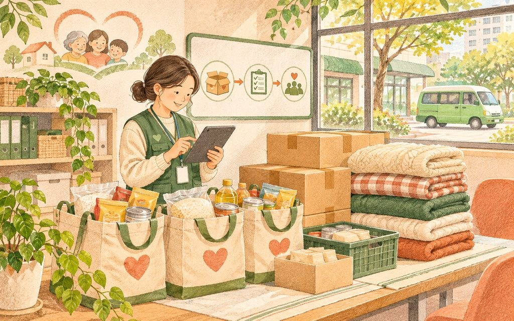
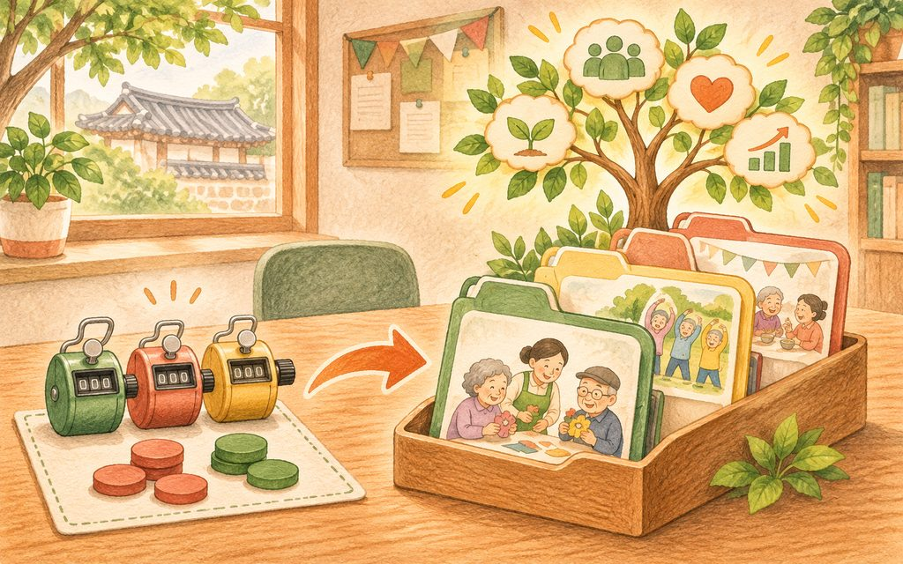
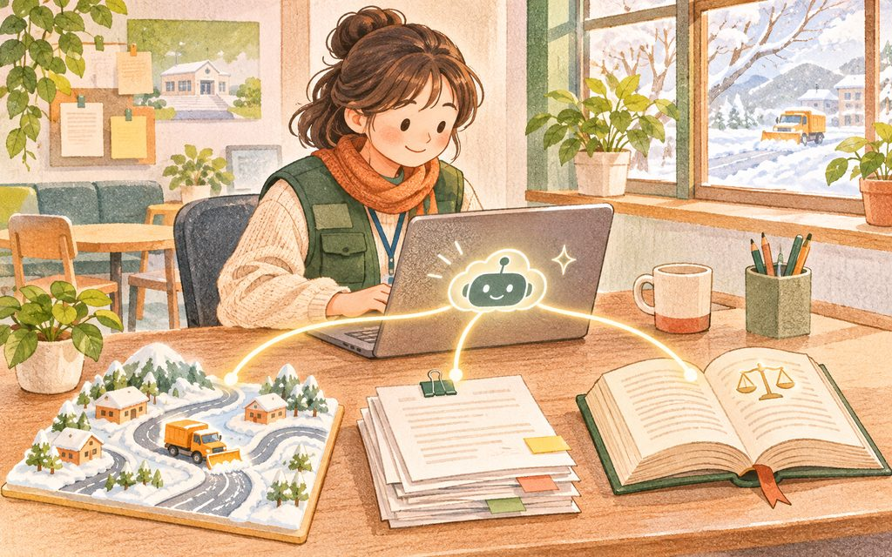
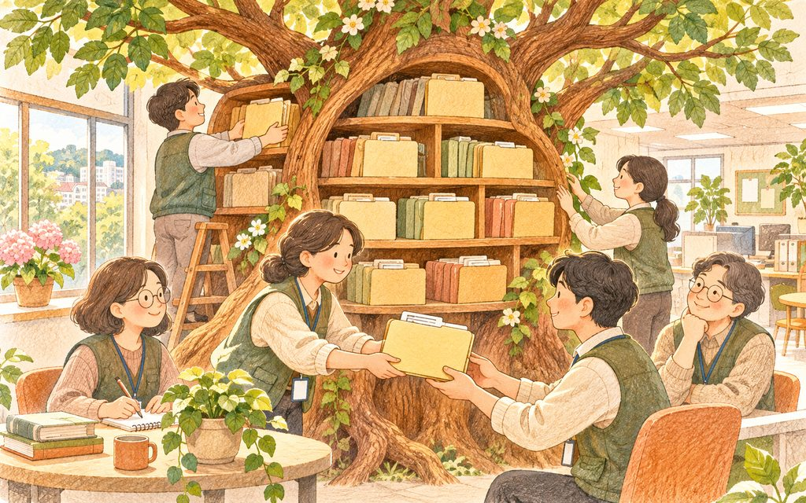

전문가가 만든 프로그램,
우리에게도 꼭 맞았나요?
우리에게 맞는 도구를, 우리가 직접 만드는 길이 있습니다.
국가 시스템은 여러 기관이 함께 쓰도록 만든 범용 시스템이라 우리 기관의 세세한 업무에 딱 맞지 않을 수 있습니다. 사설 프로그램은 용도가 한정적인데 비용은 부담이 됩니다. 그렇다고 불편함을 계속 참고 일해야 할까요?
강의에서 제시한 제3의 길은 「우리에게 맞게 직접 만든다」입니다. 아직 차량 운행일지를 종이에 쓰는 기관도 많습니다. 이제는 인공지능의 도움으로 현장의 실무자가 필요한 도구를 스스로 만들기가 한결 쉬워졌다는 것이 출발점입니다.
“모두 사회복지사인데, 그럼 누가 해? 인공지능 덕분에 스스로 만들기 너무 쉬워. 그래서, 기관의 데이터 스스로 쌓자. 데이터 주권!”강의 중 강조한 말
여기서 데이터 주권은 어렵게 생각하지 않으셔도 됩니다. 우리 업무에서 생긴 기록을 기관이 스스로 쌓고, 이해하고, 이어서 쓸 수 있도록 하자는 뜻으로 받아들이시면 됩니다. 만드는 기술을 배우는 이유도 결국 여기에 있습니다.
이미 현장에서 쓰고 있습니다
아래 여섯 가지는 모두 사회복지기관에서 실제로 만들어 쓰고 있는 사례입니다. 먼 미래의 이야기가 아닙니다. 후원물품을 등록하는 일부터 현장에서 출석을 확인하는 일까지, 매일의 업무가 도구가 되었습니다.

후원물품 등록 프로그램
기관에 들어온 후원물품을 등록하는 프로그램입니다. 반복되는 물품 기록 업무도 직접 만드는 도구의 출발점이 됩니다.
생각해 보세요 · 우리 기관은 물품이 들어왔을 때 어디에 기록하고 있나요?
각 사례의 구체적인 구축 방법까지 배운 것은 아닙니다. 먼저 “이런 업무도 직접 도구로 만들 수 있구나” 하고 범위를 넓혀 보세요.
도구를 고르기 전에,
무엇을 모을지 정하세요
인원수만 취합하는 일과, 내용을 취합하는 일은 다릅니다.
숫자만 모으면 적는 사람도, 취합하는 사람도 편합니다. 하지만 숫자만으로는 어떤 활동을 했고 무엇을 배웠는지 충분히 남지 않습니다. 강의에서 “남는 것이 없다”고 강조한 것은 이런 업무의 맥락입니다. 무엇을 모을지 정하는 일이 도구를 고르는 일보다 먼저입니다.

아래는 차이를 이해하기 위한 가상의 기록입니다. 두 방식을 번갈아 눌러 보세요.
합계는 보이지만, 과정은 보이지 않습니다
기록은 간단하고 집계하기 쉽습니다. 다음 담당자가 참고할 활동의 내용은 따로 찾아야 합니다.
알 수 있는 것 · 몇 명이, 몇 번 참여했는지
더 필요한 것 · 무엇을 했는지, 어떤 반응과 후속 조치가 있었는지
숫자에 맥락이 더해지면, 다음 업무에 쓰입니다
기록할 내용이 늘어납니다. 대신 활동의 경험과 다음에 할 일을 이어서 볼 수 있습니다.
알 수 있는 것 · 참여 규모와 활동 과정, 다음 업무의 실마리
먼저 정할 것 · 기관에 꼭 필요한 기록 항목과 작성 기준
현장 전문가가
인공지능을 만나면
한 구청의 주무관은 인공지능으로 겨울 제설 대책 시뮬레이션을 만들었습니다. 또 한글·PDF·워드 문서를 마크다운으로 바꾸는 변환기인 파서, 법령을 쉽게 찾는 도구도 만들어 깃허브에 공개했습니다.
처음에는 동료들이 “그걸 왜 만드냐”고 했지만, 개발자들이 먼저 그 가치를 알아보았고 결국 큰 상까지 받았습니다. 한글과 7년을 싸우다 지쳐 만든 도구라고 합니다. 오랫동안 겪은 현장의 불편함이 새로운 도구의 출발점이 된 것입니다.

업무의 불편함을 압니다
현장에서 오래 겪은 문제를 구체적으로 설명할 수 있습니다.
인공지능과 구현합니다
현장 지식을 바탕으로 필요한 기능을 만들고 고쳐 갑니다.
다른 현장으로 넓힙니다
공개된 도구를 가져와 사회복지 업무에 맞게 연결합니다.
사회복지 법령 찾기로 이어진 사례
강사는 그 도구를 가져와 사회복지 법령 찾기를 만들었습니다. 단순히 법 이름만 찾는 것이 아니라, 실제 업무에서 궁금한 지점을 법과 연결하는 방향입니다.
기관이라면 요구받은 서류나 절차의 법적 근거를 확인하는 아카이브, 즉 자료를 모아 둔 기록 보관소로도 활용할 수 있습니다. 다만 인공지능에게만 맡기면 안 됩니다. 실제 사례를 충분히 모으고 법과 이어서 만들어야 믿을 만한 도구가 됩니다.
“현장 전문가인데 인공지능 때문에 완전 달라진 사람이 된 거죠.”강의 중 강조한 말
전제는 하나입니다. 문서가 인공지능이 읽을 수 있는 형태로 쌓여 있어야 합니다.
업무 영역을 누구보다 잘 아는 현장 사람이 만들 때 가장 쓸모 있는 도구가 나옵니다. 인공지능에 대한 지식만큼, 어떤 사례와 문서를 쌓아 왔는지가 중요합니다.
지금 배우는 것은
결국 ‘업무 시스템’입니다
사회복지기관의 업무 시스템은 분절되어 있습니다. 실적 몇 가지만 모이게 되어 있을 뿐, 개인의 업무 기록은 서로 이어지지 않는 경우가 많습니다. 강의에서는 직원이 자기 파일을 모두 지우고 떠나도 막을 방법이 없는 구조를 문제로 짚었습니다.
그래서 오늘의 이야기는 편리한 프로그램 하나를 만드는 데서 끝나지 않습니다. 담당자가 바뀌어도 기록이 남고, 다음 사람이 업무를 이어 갈 수 있는 구조를 만드는 이야기입니다.

기업들이 여러 일을 겪으며 만들어 온 시스템에는 낯선 용어가 많습니다. 우리는 그 말을 이제 배우는 중입니다. 처음부터 모두 이해하지 못하셔도 괜찮습니다. 낯선 말이 나올 때마다 내 업무의 어떤 장면을 뜻하는지 연결하며 익숙해지시면 됩니다.
우리 업무로 바꾸어 보는 연습
도구의 이름을 외우기보다 우리 기관의 불편함에 연결해 보세요. 아래 연습은 강의의 사례를 내 업무에 적용해 보기 위한 구성입니다.
지금 가장 가까운 상황은 무엇인가요?
상황을 고르면 먼저 정해야 할 기록을 보여 드립니다.
작은 도구를 만드는 순서
버튼을 눌러 한 단계씩 따라가 보세요. 특정 프로그램의 메뉴가 아니라 업무를 설계하는 순서입니다.
불편한 일을 한 문장으로 적습니다
예: “후원물품이 들어오면 종이에 적고, 나중에 표에 다시 옮깁니다.” 누가 언제 무엇을 반복하는지 적어 보세요.
등록하면 기록이 남는 모습을 눌러 보세요
가상 물품을 골라 등록해 보세요. 실제 업무 시스템과 연결되지 않으며 입력한 기록은 새로고침하면 사라집니다.
물품을 등록하면 아래 대장에 한 줄이 생깁니다.
| 순서 | 물품 | 수량 |
|---|---|---|
| 아직 등록한 물품이 없습니다. | ||
자주 묻는 질문
교육 현장에서 나온 질문입니다. 질문을 누르면 답변이 펼쳐집니다.
질문사회복지사의 인권과 이용자의 인권이 부딪힐 때 법을 찾는 데도 쓸 수 있나요?
쓸 수 있습니다. 다만 인공지능에게만 묻기보다 실제 사례를 충분히 모아 법과 이어서 만들어야 믿을 만한 도구가 됩니다.
강의의 사회복지 법령 찾기 사례처럼, 법령 본문과 현장 판단 예시, 법끼리 부딪히는 지점, 관련 법의 연결을 함께 살펴보는 방향입니다. 핵심은 인공지능의 답 하나에 맡기는 것이 아니라 현장의 사례와 법적 근거를 함께 쌓는 것입니다.
세 문제로 돌아보세요
답을 고르고 ‘정답과 해설 보기’를 누르세요. 다시 골라 확인하셔도 됩니다.
오늘의 과제: 작은 시작 하나
완성된 프로그램까지 만들 필요는 없습니다.
내 업무에서 출발할 준비가 되었는지 하나씩 확인하세요.
체크한 내용은 이 브라우저에 저장됩니다.
현장을 가장 잘 아는 사람이
가장 쓸모 있는 도구를 만듭니다.